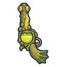
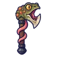
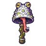
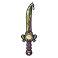
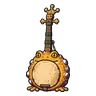
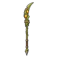
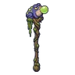
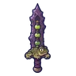
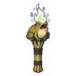
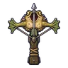

คางคกพิษ
มอนธาตุพิษ Lv 48–62
เจอที่
| แมพ | โซน | Lv | ในแมพ | ภูมิภาค |
|---|---|---|---|---|
| หนองพิษป่าชายเลน | ใจกลางหนองพิษ | 50–60 | ≈45 | แดนใต้สีแดง |
| ป่าชายเลนน้ำขึ้น | 48–56 | ≈33 | แดนใต้สีแดง | |
| บ่อโคลนพิษเดือด | บ่อโคลนเดือดใหญ่ | 48–60 | ≈28 | แดนใต้สีแดง |
| ดงต้นไม้แขวนกรง | ต้นไม้กรงใหญ่ | 48–60 | ≈28 | แดนใต้สีแดง |
| หมู่บ้านคนเก็บพิษ | 56–62 | ≈17 | แดนใต้สีแดง | |
| หอรากมืด (Dark Root) | ทะเลยางดำ | 81–90 |
≈ จำนวนที่อยู่ในแมพพร้อมกันโดยเฉลี่ย คิดจากไฟล์เกม (จุดเกิดของแมพ × 4 แบ่งตามสัดส่วนของแต่ละตัว) ตายแล้วเกิดใหม่ที่เดิมใน 22 วินาที · ตอนเล่นออนไลน์เซิร์ฟเวอร์เป็นคนเกิดมอน อาจไม่ตรง
ค่าสถานะตามเลเวล
| Lv | HP | ATK | DEF | MDEF | EXP | Job |
|---|---|---|---|---|---|---|
| 48 | 9,539 | 85–127 | 13 | 14 | 50 | 38 |
| 55 | 13,718 | 97–145 | 15 | 17 | 56 | 42 |
| 62 | 18,777 | 109–163 | 17 | 19 | 63 | 47 |
ตีด้วยธาตุไหนดี
แรงขึ้น: —
เบาลง: มืด ×0.5 อมตะ ×0.5 พิษ ×0
วัตถุดิบที่ดรอป
| ของ | โอกาส | |
|---|---|---|
| ต่อมพิษคางคก | 60% | 1 ชิ้น (15% ได้ 2) |
อุปกรณ์ที่ดรอป (10)
| ของ | โอกาส |
|---|---|
 ปืนพกคู่คางคกพิษ | 0.25% |
 ขวานปากคางคกพิษ | 0.12% |
 กระดิ่งวิญญาณคางคกพิษ | 0.12% |
 ดาบคู่คางคกพิษ | 0.12% |
 เครื่องดนตรีคางคกพิษ | 0.12% |
 หอกยาวง้าวคางคกพิษ | 0.12% |
 คทาคางคกพิษ | 0.12% |
 ดาบคางคกพิษ | 0.12% |
 คบเพลิงคางคกพิษ | 0.12% |
 หน้าไม้คางคกพิษ | 0.12% |
สกิล
ยิงไกล (Lv 25+) · ยิงไกล (Lv 60+) · แอ่ง (Lv 60+)